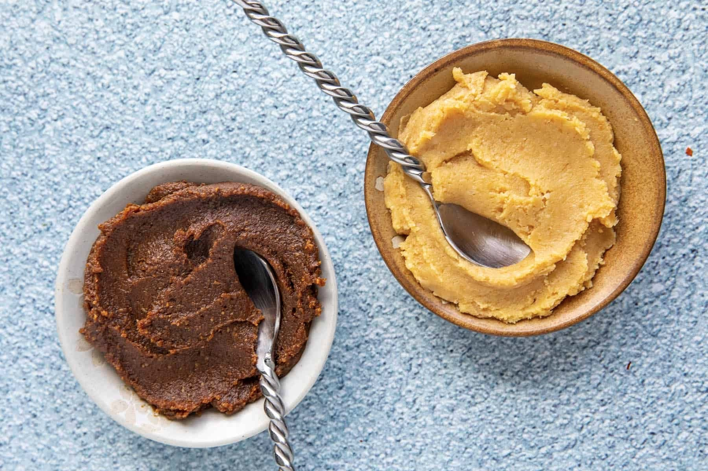
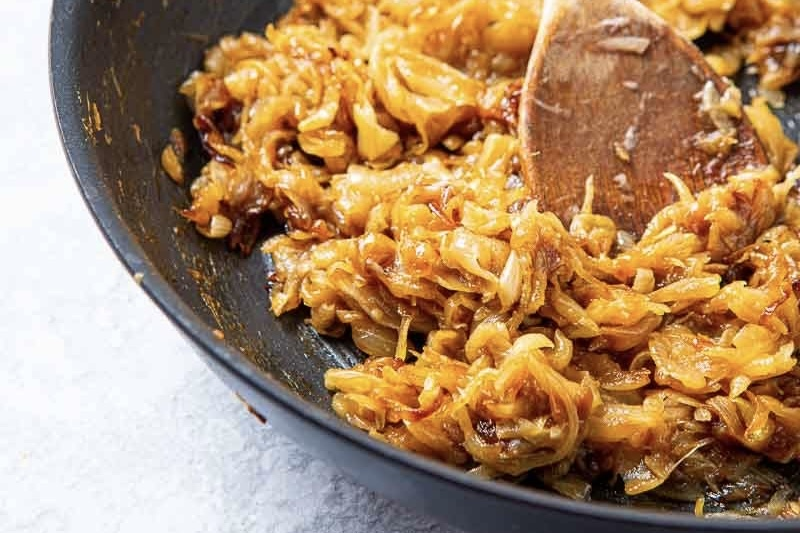
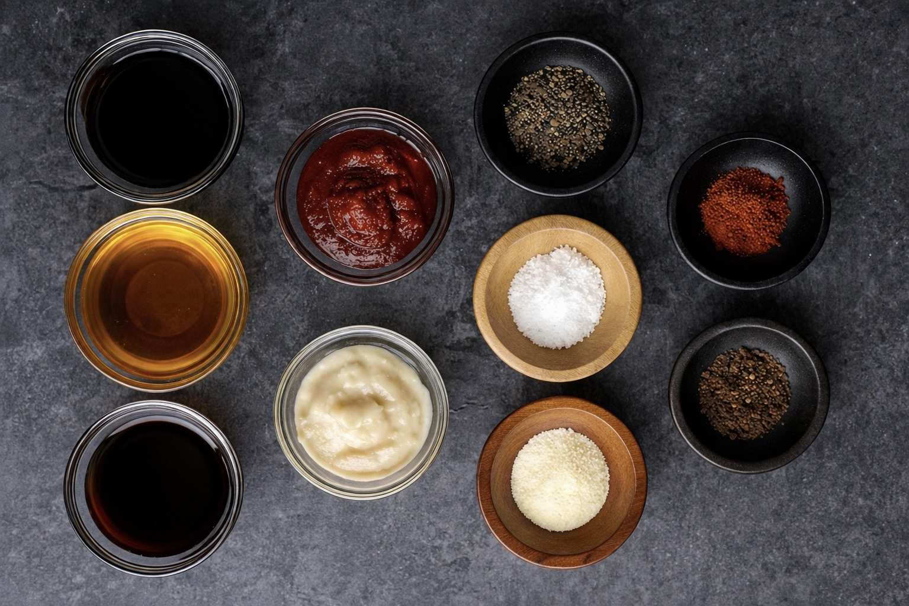
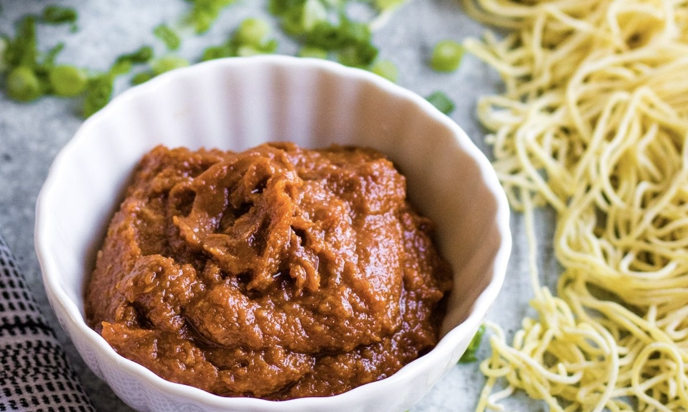

The deep richness of red miso and the gentle sweetness of white miso create a layered, complex flavor.
Красное и белое мисо создают глубокий и сбалансированный вкус.
Կարմիր և սպիտակ միսոն ստեղծում են հարուստ և հավասարակշռված համ։
赤味噌のコクと白味噌の甘みが、立体的な味わいを生む。

Garlic, ginger, and onion are slowly cooked to unlock deep flavors.
Чеснок, имбирь и лук раскрывают вкус при медленном приготовлении.
Սխտորը, կոճապղպեղը և սոխը բացում են իրենց համը։
じっくり火入れし、旨味を最大限に引き出す。

Selected sauces and spices are layered to achieve balance.
Добавляются соусы и специи для баланса.
Ավելացվում են սոուսներ և համեմունքներ։
バランスを整えるために重ねていく。

Time allows the flavors to unify into one.
Время объединяет вкус.
Ժամանակը միավորում է համերը։
時間が味をひとつにする。